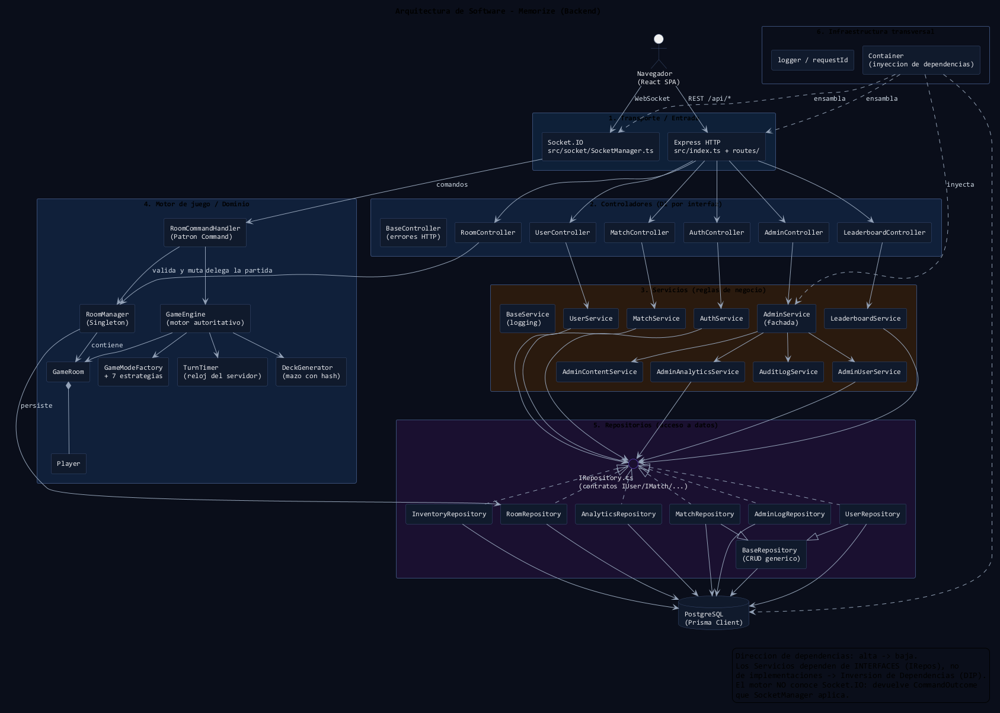

arquitectura-backend.puml (renderizado con PlantUML).Express expone la API REST bajo /api/*; Socket.IO recibe los comandos de sala/partida. Ninguno contiene reglas de negocio: solo traducen HTTP/WebSocket.
Reciben la petición, extraen la identidad del JWT y delegan en un servicio. Todos extienden BaseController y reciben sus dependencias por constructor (interfaces).
Concentran las reglas de negocio. AdminService delega en AdminUserService, AdminContentService, AdminAnalyticsService y AuditLogService (SRP). Extienden BaseService.
El motor autoritativo: genera el mazo, valida volteos, posee el reloj de turno y calcula puntuaciones. El motor no conoce Socket.IO; devuelve CommandOutcome que el transporte aplica.
Único punto que habla con Prisma. Los servicios dependen de los contratos de IRepository.ts, jamás de la implementación concreta ni de PrismaClient.
Container es el único lugar que construye e inyecta todo el grafo de dependencias. Logger estructurado y correlación por requestId atraviesan las capas.
IAuthService, IUserService, IRoomManager… por constructorIUserRepository, IMatchRepository, IAnalyticsRepository…GameEngine depende de IRoomManager y de un callback, no de SocketManagerAdminService y LeaderboardService ya no importan PrismaClient| Capa | Ruta | Puede depender de | Nunca depende de |
|---|---|---|---|
| Transporte | src/index.ts, src/routes/, src/socket/ | Controladores, Container, motor | Prisma |
| Controladores | src/controllers/ | Interfaces de servicios, BaseController | Repositorios, Prisma |
| Servicios | src/services/ | Interfaces de repositorios, BaseService | Prisma, Express, Socket.IO |
| Motor / Dominio | src/engine/, src/models/, src/managers/ | Modelos de dominio, estrategias | Express, Socket.IO (solo recibe Socket para identidad) |
| Repositorios | src/repositories/ | Prisma Client, BaseRepository | Servicios, controladores |
HTTP → Controlador → Servicio → IRepositorio → Prisma → PostgreSQL, y el flujo
de partida es Socket.IO → RoomCommandHandler → GameEngine/RoomManager → Repositorio.
La capa Container no aparece en el camino de ejecución porque solo se usa al
arrancar: es quien "cablea" las dependencias. Gracias a eso, cambiar PostgreSQL, el motor de
plantillas o el transporte no obliga a tocar las reglas de negocio.